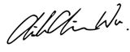

I'm a dedicated, experienced interaction designer/ entrepreneur with additional knowledge in areas such as programming (HTML,CSS,Unity3D, a little JS), business mapping, and project management.
Thank you for viewing my portfolio. Feel free to email me if you have any great idea! I look forward to meeting new people and build something cool together.
I chose these 5 projects to represent several aspects of my interests. Instead of maping out the entirety of each project, I’ve chosen different elements and methods I usually use to feature when presenting each project. Hopefully it will give you an idea of the range of my work both in type of product and design process, and my willingness to dive in and take on a wide variety of roles and duties in project design, as well as my enthusiasm for learning new things.
Check My Work